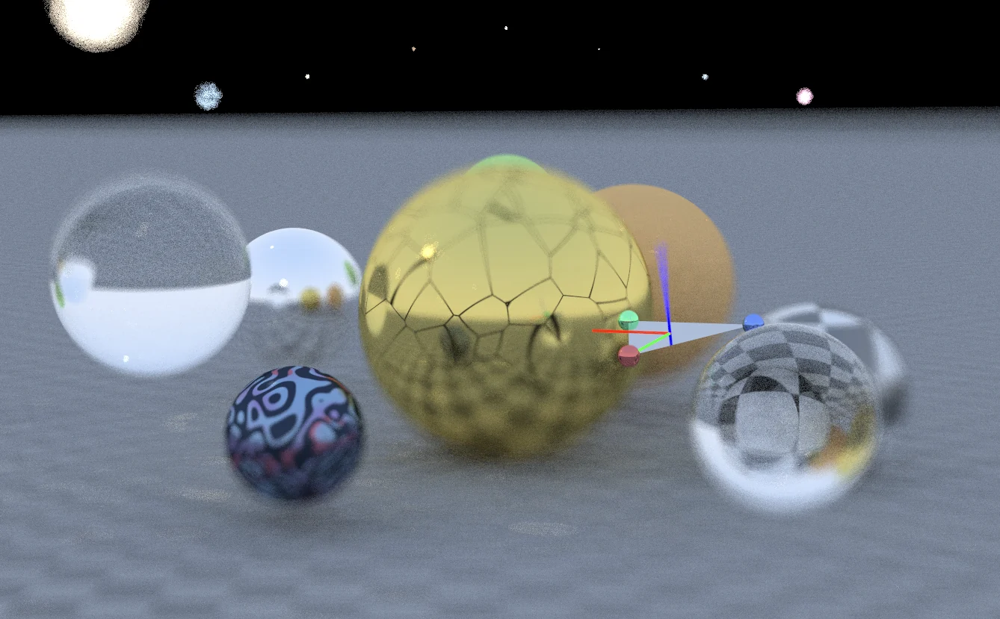

Aperture
A real-time path tracer for computational optics: compose a tilt-shift photograph, separate wavelengths, gate light by travel time, and reconstruct holographic measurements. Image formation and the controls that change it are part of the same experiment.
Explore connections
Open the application, then follow what changes
A real-time path tracer that treats the camera as an experimental instrument. Compose a tilt-shift photograph, follow wavelength-dependent transport, gate arrivals by travel time and inspect holographic measurements within the same rendering environment.
-
01
Compose the view
Move the camera and choose the geometry you want in focus.
-
02
Shape the focus
Use tilt-shift geometry to control the plane of sharpness.
-
03
Trace the measurement
Follow spectral light paths and time-dependent image formation.
-
04
Inspect the result
Connect the rendered photograph to the camera model that produced it.
Make the camera part of the renderer
Aperture brings camera geometry, light transport, and computational imaging into one interactive WebGL path tracer. Its tilt-shift showcase lets the user place a plane of focus in the scene and see how that choice changes the rendered depth of field.
The camera samples points across a finite aperture and sends rays toward a focus point. Accumulating those samples produces sharp detail where the rays converge and blur elsewhere. Focal length, aperture size, and focus geometry therefore affect ray generation itself.
A plane of focus, defined by three points
The newer tilt-shift mode adapts Andrew Kensler’s thin-lens construction from Ray Tracing Gems II, Chapter 31. Lens tilt makes an oblique plane of focus possible; the interactive contribution here is connecting that geometry to a directly manipulated three-point gizmo and a progressively rendered scene.
For points A, B, and C, the shader constructs the plane normal n = normalize((B − A) × (C − A)). It transforms the points into camera space to derive a tilted lens basis, samples that lens, and intersects the viewing ray with the chosen focal plane to obtain the ray’s focus target.
This makes a useful rendering problem visible: changing the camera’s sampling geometry changes which parts of a three-dimensional scene appear sharp. The page’s tilt-shift screenshot shows the effect; the demo lets the viewer move the focus plane and inspect it from a new configuration.
Try the tilt-shift showcase
Use the Thin Lens camera and enable Physically Based Tilt-Shift in the highlighted control group. Enable Show Focal Plane Gizmo for Interactive Control, then lower the F-stop to make changes in depth of field easier to see.
- Drag the colored spheres to rotate the focus plane. Drag the triangle’s center with the left mouse button to translate it parallel to the image plane, or the right button to move it in the perpendicular plane.
- Move the plane across objects at different depths and let the progressive image settle after each change. Compare the sharp region with the plane’s position.
- Keep the older Film Tilt X/Y controls at zero when exploring the three-point mode: that earlier branch takes precedence when film tilt is active.
Beyond a photographic camera
The same application also exposes wavelength-dependent dispersion, time-of-flight experiments, and holographic capture and reconstruction controls. These make the project a broader computational-optics workbench: the image can represent a measurement that is processed further to recover information about the scene.
The interface separates post-process lens color shifts from its spectral ray-level option. That distinction matters when reading a result: similar-looking color fringes can come from different models. The related time-of-flight essay develops the transient-rendering ideas in more detail.
More recorded views · 2
Current scope
- The camera is a thin-lens approximation. The three-point branch uses a simplified focal-plane intersection with fallbacks for nearly parallel, behind-camera, or very distant intersections; extreme configurations can produce artifacts.
- The newer tilted-lens branch samples a circular disk. The general camera’s other aperture shapes and the older film-tilt approximation should not be read as validated combinations with this mode.